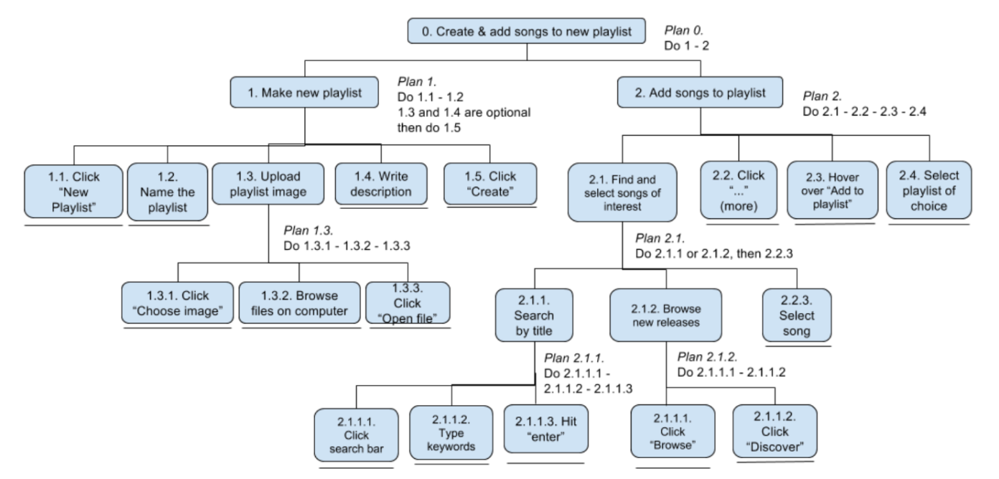
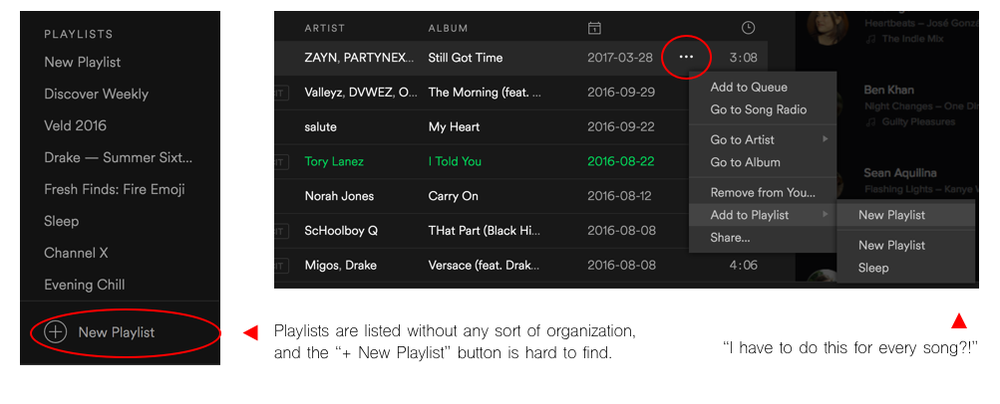
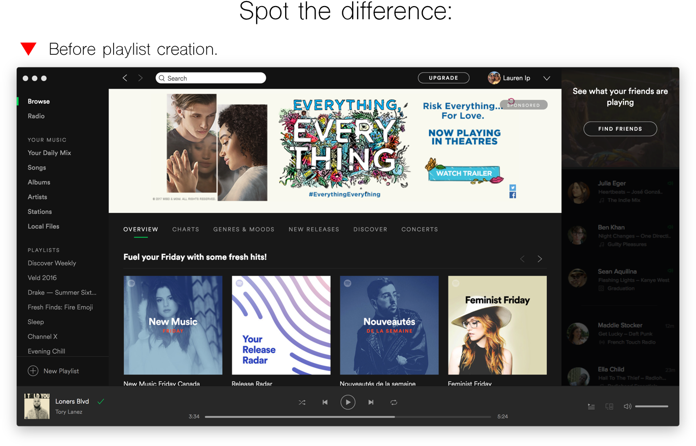
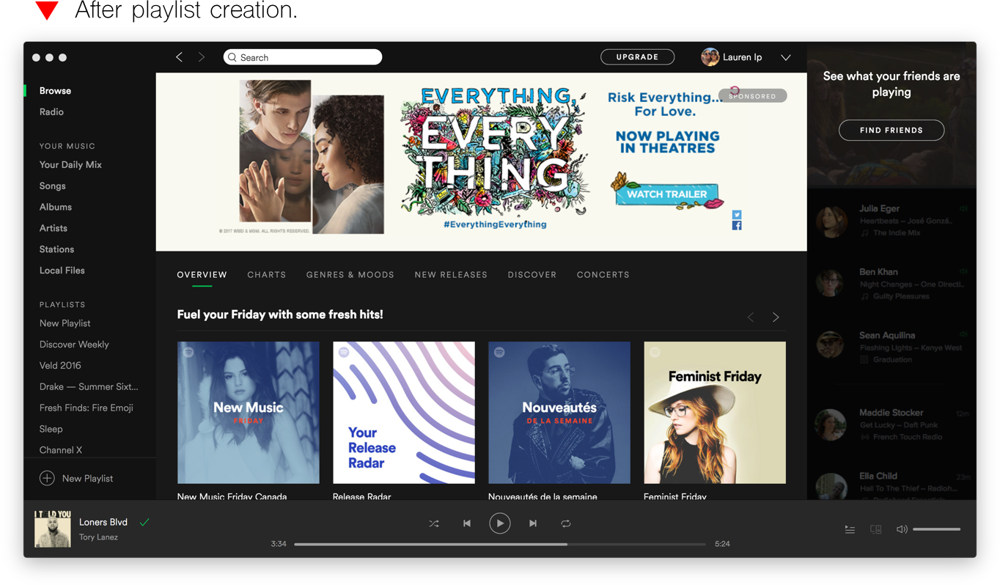
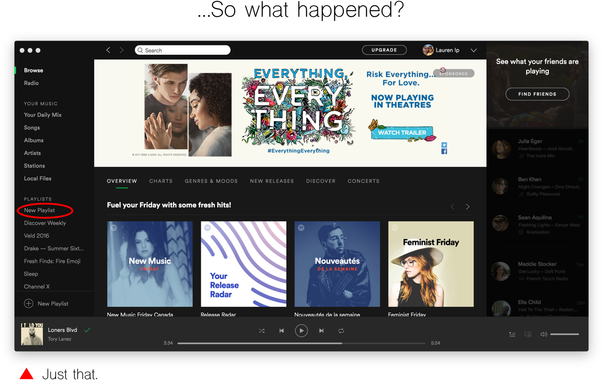
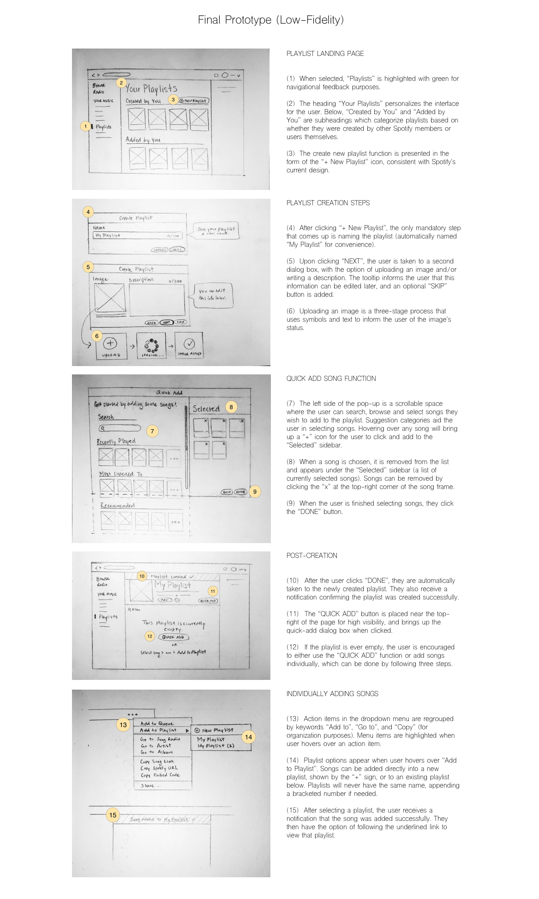
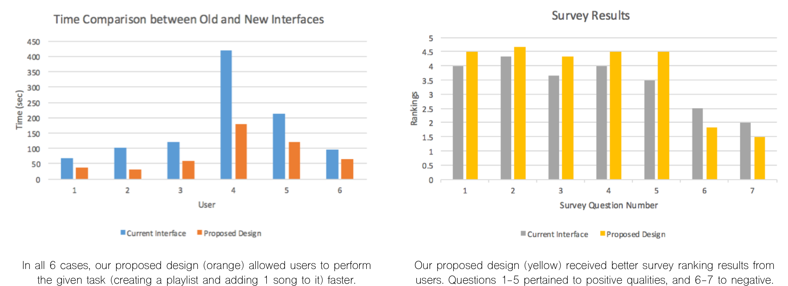

Overview
For this case project, we were tasked to analyze, test, and redesign Spotify's current desktop application interface to improve its overall user experience. As one of the most popular music streaming services out there, Spotify's interface design is far from perfect. Although there were plenty of task functions that could have been improved, we chose to focus on one we thought was most important: the ability to create and add songs to a new playlist.
Task Analysis
We started by reviewing how Spotify currently works, using a Hierarchical Task Analysis diagram to visually break down its functions into subtasks:

After observing how users went about creating a new playlist, we found several issues with the interface:
- Visual clutter. It can take a while to find certain buttons on the screen (e.g., “New Playlist” button located at the bottom of the sidebar menu). Spotify’s interface often presents a lot of content at once, and while this allows for quick access of information, it also makes it more difficult to find exactly what you’re looking for.
- Disorganization of playlist information. There is no centralized location for playlist information beyond the cluttered list presented in the sidebar. As a user’s playlist base grows, it becomes more and more frustrating to organize titles.

- Disconnect between related tasks. There is a disconnect between creating a playlist and then adding songs to it afterward. Once a playlist is created, user guidance ends rather abruptly; there are no obvious instructions on how to add songs to that playlist, disrupting task flow and giving users a hard time figuring out what to do next. The existing process also requires users to add songs individually by clicking on the “…” (more) icon each time, which becomes quite tedious.
- Lack of system feedback. This is an especially glaring issue because of the navigational complexity required as a result of #3 above. There is little that lets the user know an action was completed successfully, whether it’s creating a playlist or adding a song. This just adds confusion, makes the user doubt the system, and can cause unnecessary duplicate actions.



Idea Generation
Having selected issues which we thought needed the most attention, we then brainstormed ways of solving each issue.
We asked ourselves hypothetical questions such as “What would be more convenient?”, “What is more intuitive?” or
“What is confusing about this task?”. After discussing our individual sketches and design alternatives, we combined
the most impactful solutions to form a final low-fidelity prototype.
Prototype
The final prototype integrates several aspects of the design alternatives, which were chosen based on their
cohesiveness, adherence to design principles and Nielsen’s Usability Heuristics, as well as overall contribution to
improving task flow. The sketches shown below outline the features of our proposed interface design as a user
attempts to create and add songs to a new playlist.

Usability Testing
To see if our proposed design was actually effective, we conducted a comparative usability test, identifying
strengths and weaknesses along the way. We tested 6 different users from various age groups (high school/university
students, working adults) having different levels of music streaming expertise. For each design, users were given
instructions to create a new playlist and add songs to it, and after completing all test runs, users were given a
survey to complete.
Test data was collected using a variety of both quantitative and qualitative methods. Qualitative methods (such as
video recordings, notes on user thought processes, user comments and suggestions) helped measure the usability of
our proposed interface as a standalone design, while quantitative methods (such as time until task completion,
number of prompts needed, design rankings) were used to compare the proposed design to the current interface.
Results
Our results showed a strong overall preference for the proposed design. Not only did its survey question rankings
surpass those of the current interface, we also found that users were able to perform the task given to them 49%
faster using the proposed design versus the current interface.

Although the prototype compared well quantitatively, our qualitative results also highlighted a few weaknesses in our design.
Using retrospective video evidence and written user feedback, we were able to identify a few usability issues that could be
addressed next in future iterations of the design.